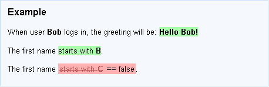

Download
Latest Unstable Version
Download and build from subversion repository: http://concordion.googlecode.com/svn/trunk/concordion
Latest Stable Version
- concordion-1.4.0.zip (full distribution including source code and all dependencies)
Older Versions
- concordion-1.3.1.zip (full distribution including source code and all dependencies)
Non-Java Versions
Versions are available for .NET, Ruby, and Python [More details]
Concordion 1.4.0: New and Noteworthy
Extension API
Thanks to the work of Nigel Charman, Concordion's internal API has now been opened up to support extensions (e.g. new commands and new listeners for Concordion events). For details, see the classes in org.concordion.api.extension and the fixtures that demonstrate it.
Nigel also has some sample extensions at http://github.com/nigelcharman/concordion-extensions
If you've previously extended Concordion, by referencing internal classes, you'll need to make some changes to use the public API. If you have any questions please ask on the mailing list.
Upgraded Dependencies
- junit-4.8.2
- xom-1.2.5
Concordion 1.3.1
concordion:run
This new command, contributed by Stein Kåre Skytteren, lets you link to another specification and run it, displaying the link's background in green / red / gray as appropriate.
You might use this to create a page containing a list of all the acceptance tests for a feature, in a similar way you would use a JUnit test suite.
Support for JUnit 4.5
Example syntax:
package spec.examples; import org.concordion.integration.junit4.ConcordionRunner; import org.junit.runner.RunWith; @RunWith(ConcordionRunner.class) public class Demo { public String greetingFor(String firstName) { return String.format("Hello %s!", firstName); } }
Please note that JUnit 4.4 is no longer supported due to changes in JUnit's API between 4.4 and 4.5. JUnit 3.8.x is still supported, however.
Annotations
You can include partially-implemented specifications in your normal build without breaking the build, by annotating your fixture classes with one of the following annotations:
- @ExpectedToPass
- @ExpectedToFail
- @Unimplemented
For example:
import org.concordion.api.ExpectedToFail;
import org.concordion.integration.junit3.ConcordionTestCase;
@ExpectedToFail
public class GreetingTest extends ConcordionTestCase {
public String greetingFor(String firstName) {
return "TODO";
}
See here for an explanation of the semantics of each annotation.
Linked Test Data
A special variable "#HREF" lets you access the href attribute for a link. This
can be used when you want to reference test data from a specification.
[More details]
concordion:assertTrue
For example:
<p>
When user <b concordion:set="#firstName">Bob</b>
logs in, the greeting will be:
<b concordion:assertEquals="greetingFor(#firstName)">Hello Bob!</b>
</p>
<p>
The first name <span concordion:assertTrue="#firstName.startsWith(#letter)">starts
with <b concordion:set="#letter">B</b></span>.
</p>
<p>
The first name <span concordion:assertTrue="#firstName.startsWith(#letter)">starts
with <b concordion:set="#letter">C</b></span>.
</p>
Will result in this output:
